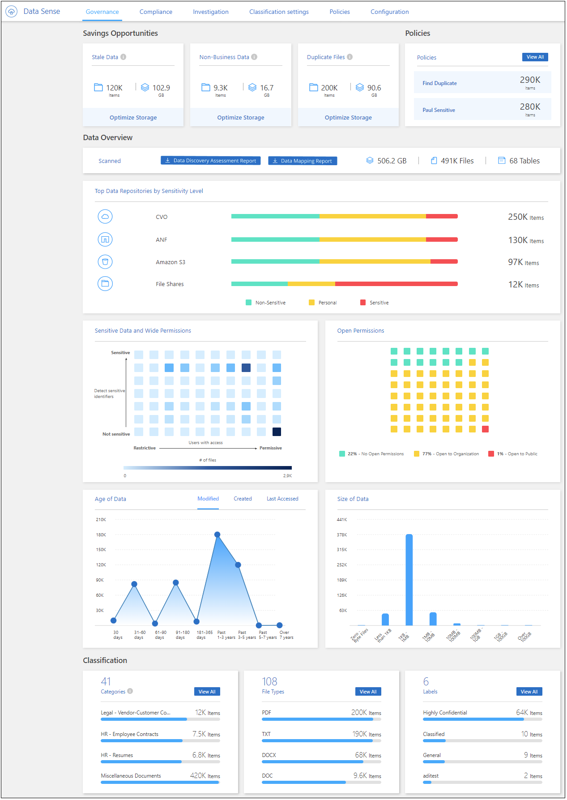

版本資訊
版本資訊
檢視組織中儲存資料的治理詳細資料
 建議變更
建議變更
控制與組織儲存資源資料相關的成本。BlueXP 分類可識別系統中的過時資料、非商業資料、重複檔案和非常大型檔案數量、讓您決定是要移除某些檔案、還是要將某些檔案分層儲存至較便宜的物件儲存設備。
此外、如果您計畫將資料從內部部署位置移轉至雲端、您可以在移動資料之前、先檢視資料大小、以及是否有任何資料包含敏感資訊。
管理儀表板
「治理」儀表板提供相關資訊、讓您提高效率、並控制儲存在儲存資源上的資料相關成本。

節省商機
您可能想要調查「儲存商機」區域中的項目、看看是否有任何您應該刪除的資料、或是將資料分層到較便宜的物件儲存設備。按一下每個項目、即可在「調查」頁面中檢視篩選後的結果。
-
過時資料：3年前上次修改的資料。
-
非商業資料：根據類別或檔案類型、被視為與商業無關的資料。這包括：
-
應用程式資料
-
音訊
-
可執行檔
-
映像
-
記錄
-
影片
-
雜項（一般「其他」類別）
-
-
重複檔案：在您正在掃描的資料來源中、其他位置中重複的檔案。 "查看顯示哪些類型的重複檔案"。
- 附註
-
如果您的任何資料來源都實作資料分層、則物件儲存區中已存在的舊資料可能會在 _ 過時資料 _ 類別中進行識別。
結果最多的原則
在_policies區域中、結果最多的原則會顯示在清單頂端。按一下原則名稱、即可在「調查」頁面中顯示結果。按一下*檢視全部*以檢視所有可用原則的清單。
按一下 "請按這裡" 以深入瞭解原則。
資料總覽
「_Data Overview」（資料概覽）區段提供所有正在掃描資料的快速概覽。按一下按鈕、即可下載完整的資料對應報告、其中包含所有工作環境和資料來源的使用容量、資料存留時間、資料大小和檔案類型。請參閱 資料對應報告 以取得此報告的完整詳細資料。
依資料敏感度列出的主要資料儲存庫
「Top Data儲存庫依敏感度等級」區域列出前四大資料儲存庫（工作環境和資料來源）、其中包含最敏感的項目。每個工作環境的長條圖分為：
-
非敏感資料
-
個人資料
-
敏感的個人資料
您可以將游標停留在每個區段上、查看每個類別中的項目總數。
按一下每個區域、即可在「調查」頁面中檢視篩選後的結果、以便進一步調查。
依敏感度和廣泛權限列出的資料
「敏感資料」和「寬權限」區域提供內含敏感資料（包括敏感和敏感的個人資料）且過於許可的檔案熱圖。這有助於您瞭解敏感資料的風險所在。
檔案的評分是根據具有X軸存取檔案權限的使用者人數（最低至最高）、以及Y軸上檔案中的敏感識別碼數量（最低至最高）。區塊代表與X和Y軸項目相符的檔案數量。較淺的色塊很好；使用者較少、每個檔案的機密識別碼較少。較暗的區塊是您可能想要調查的項目。例如、下方畫面顯示深藍色區塊的暫留文字。這表示您有1、500個檔案、其中751-100個使用者可以存取、其中每個檔案有501-100個敏感識別碼。

您可以按一下您感興趣的區塊、在「調查」頁面中檢視受影響檔案的篩選結果、以便進一步調查。
如果您尚未將身分識別服務與 BlueXP 分類整合、則此面板不會顯示任何資料。 "瞭解如何將 Active Directory 服務與 BlueXP 分類整合"。

|
此面板支援CIFS共用區、OneDrive和SharePoint資料來源中的檔案。目前不支援資料庫、 Google Drive 、 Amazon S3 和一般物件儲存。 |
依開放權限類型列出的資料
「開啟權限」區域會顯示所有要掃描之檔案所存在的每種權限類型的百分比。此圖表顯示下列權限類型：
-
無開放權限
-
開放給組織使用
-
開放給大眾使用
-
不明存取
您可以將游標移到每個區段上、查看每個類別中的檔案總數。按一下每個區域、即可在「調查」頁面中檢視篩選後的結果、以便進一步調查。
資料的存留期和資料圖表的大小
您可能想要調查_age_和_Siz__圖表中的項目、看看是否有任何您應該刪除的資料、或將其分層以降低物件儲存成本。
您可以將游標停留在圖表中的某個點上、以查看該類別中資料的年齡或大小詳細資料。按一下以檢視根據該年齡或大小範圍篩選的所有檔案。
-
資料圖表的存留期：根據資料建立時間、上次存取時間或上次修改時間來分類資料。
-
資料圖表大小：根據大小來分類資料。
- 附註
-
如果您的任何資料來源都實作資料分層、則物件儲存區中已存在的舊資料可能會在 _ 資料存留期 _ 圖表中加以識別。
資料對應報告
資料對應報告概述儲存在企業資料來源中的資料、協助您做出移轉、備份、安全性及法規遵循程序等決策。報告會先列出概述、總結您所有的工作環境和資料來源、然後提供每個工作環境的詳細資料。
報告包含下列資訊：
| 類別 | 說明 |
|---|---|
使用容量 |
適用於所有工作環境：列出每個工作環境的檔案數量和使用容量。對於單一工作環境：列出使用最大容量的檔案。 |
資料存留期 |
提供三個圖表、說明檔案建立、上次修改或上次存取的時間。根據特定日期範圍列出檔案數量及其使用容量。 |
資料大小 |
列出工作環境中特定大小範圍內的檔案數量。 |
檔案類型 |
列出儲存在工作環境中的每種檔案類型的檔案總數和使用容量。 |
產生資料對應報告
您可以從 BlueXP 分類中的「治理」索引標籤產生此報告。
-
在BlueXP功能表中、按一下*管理>分類*。
-
按一下 * Governance * 、然後按一下 * Data Mapping Report* 按鈕。

BlueXP 分類會產生 PDF 報告、您可以視需要檢閱並傳送給其他群組。
如果報告大於 1 MB 、則 PDF 檔案會保留在 BlueXP 分類執行個體上、您會看到關於確切位置的快顯訊息。當 BlueXP 分類安裝在內部部署的 Linux 機器上、或部署在雲端的 Linux 機器上時、您可以直接瀏覽至 PDF 檔案。當 BlueXP 分類部署在雲端時、您需要 SSH 至 BlueXP 分類執行個體、才能下載 PDF 檔案。 "請參閱如何存取 Classification 執行個體的資料"。
請注意、您可以按一下、從 BlueXP 分類頁面頂端自訂顯示在報告第一頁上的公司名稱  然後按一下*變更公司名稱*。下次產生報告時、會加入新名稱。
然後按一下*變更公司名稱*。下次產生報告時、會加入新名稱。
資料探索評估報告
「資料探索評估報告」提供對掃描環境的高層級分析、以強調系統的發現、並顯示關切領域和可能的補救步驟。結果是根據資料的對應和分類而定。本報告的目標是提高對資料集三個重要層面的認知度：
| 功能 | 說明 |
|---|---|
資料治理問題 |
詳細瞭解您擁有的所有資料、以及您可以減少資料量以節省成本的領域。 |
資料安全性曝險 |
由於存取權限廣泛、您的資料可存取至內部或外部攻擊的區域。 |
資料法規遵循漏洞 |
您的個人或敏感個人資訊位於安全性和 DSAR （資料主體存取要求）的位置。 |
評估後、本報告會指出您可以在哪些領域：
-
變更保留原則、或移動或刪除特定資料（過時、重複或非業務資料）、以降低儲存成本
-
修改全域群組管理原則、以保護具有廣泛權限的資料
-
將 PII 移至更安全的資料儲存區、以保護您擁有個人或敏感個人資訊的資料
產生資料探索評估報告
您可以從 BlueXP 分類中的「治理」索引標籤產生此報告。
-
在BlueXP功能表中、按一下*管理>分類*。
-
按一下 * 治理 * 、然後按一下 * 資料探索評估報告 * 按鈕。

BlueXP 分類會產生 PDF 報告、您可以視需要檢閱並傳送給其他群組。
請注意、您可以按一下、從 BlueXP 分類頁面頂端自訂顯示在報告第一頁上的公司名稱 然後按一下*變更公司名稱*。下次產生報告時、會加入新名稱。